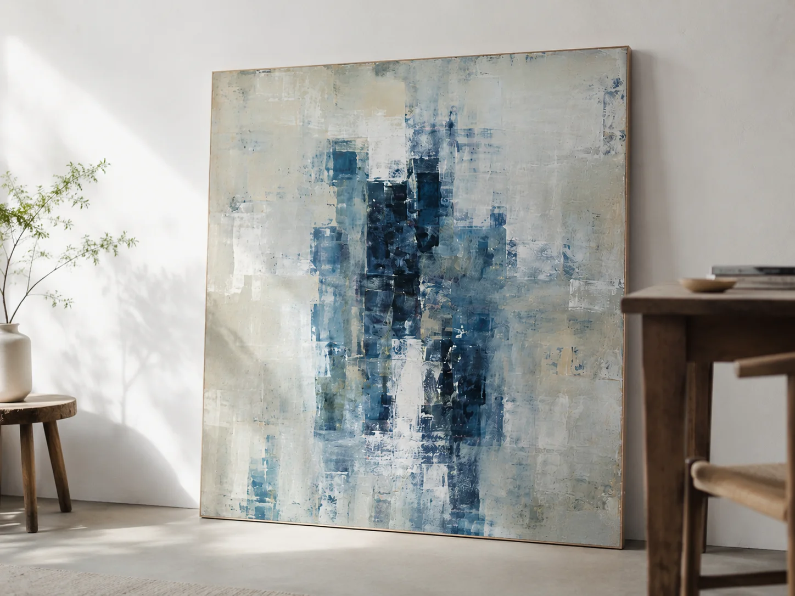
個人邸・リビング（東京都内）「層 -layers- 」原画制作・搬入設置ソファ背面の壁一面に合わせたサイズで制作。原画制作から額装・設置まで担当。
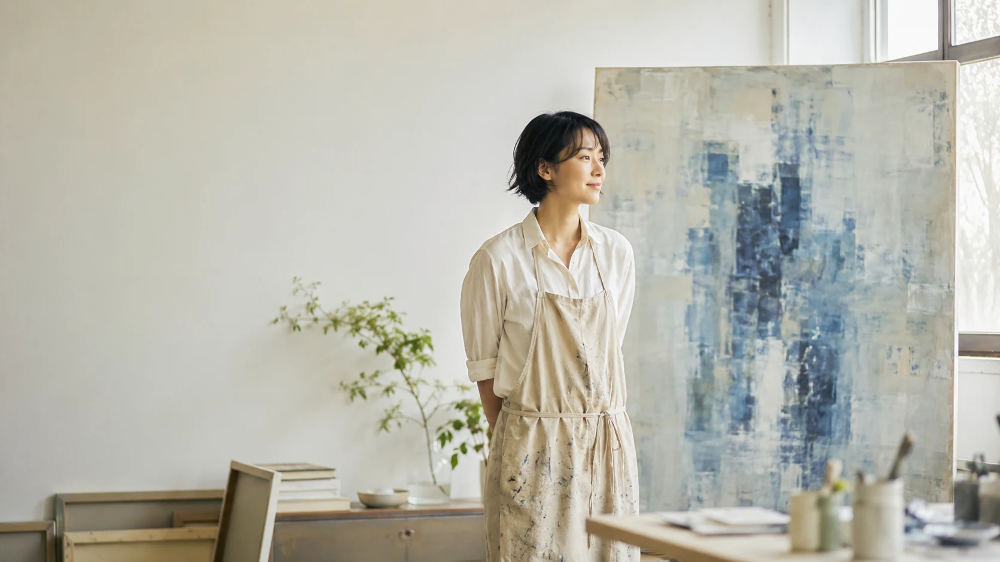
藍色を幾層にも重ね、光と時間の記憶を描く一点物の抽象画。個人邸から店舗・オフィスまで、空間に合わせたオーダーメイド制作を承ります。
問い合わせる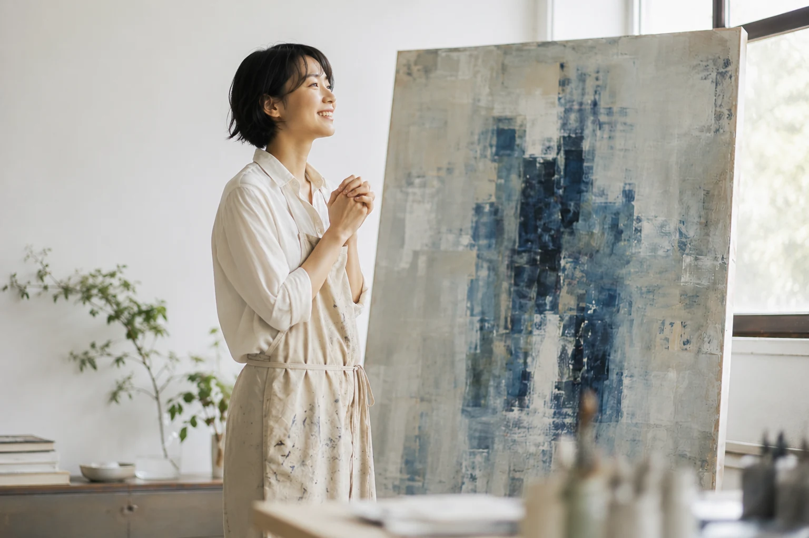
量産されたポスターやプリントとは違う、一点物だからこその存在感。Atelier Souが目指すのは、こんな毎日です。
サイズも色調も、飾る場所に合わせて調整。同じものが二つとない、空間の主役になる一枚です。
層を重ねた藍色は、朝と夕で見え方が変わります。暮らしの中で飽きることのない絵です。
制作の背景や込めた想いを知って選べるから、来客時にも自信を持ってご紹介いただけます。
個人邸からアトリエ併設ギャラリーまで。藍色を主題にしたシリーズ「層 -layers-」を中心にご紹介します。

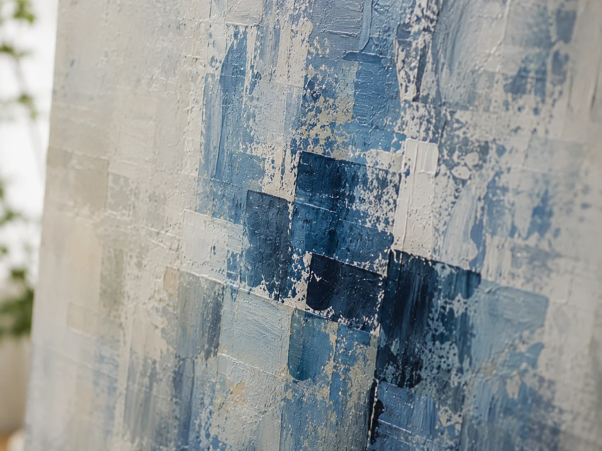
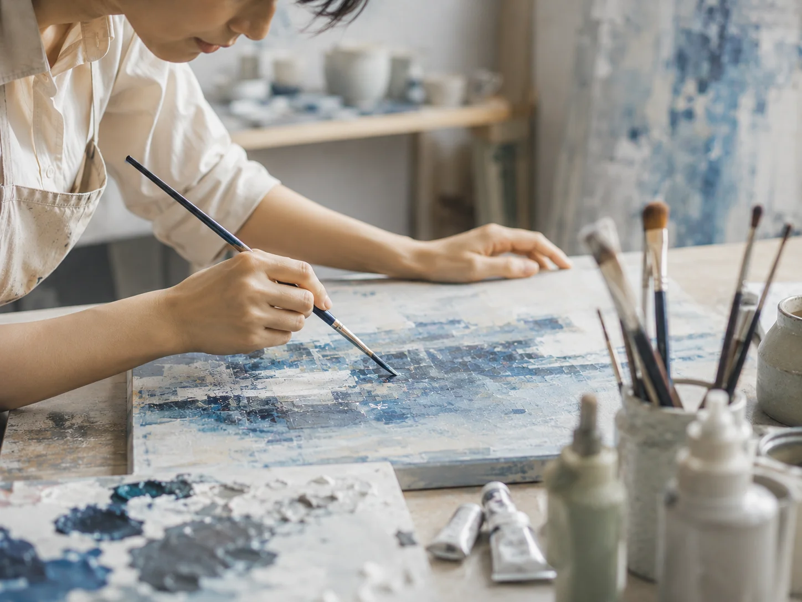
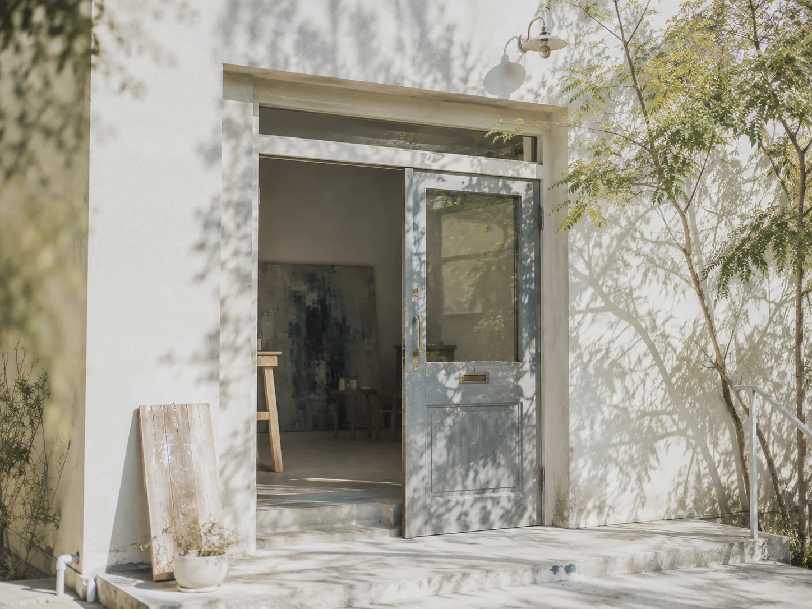
原画のオーダーメイド制作を中心に、空間演出からワークショップまでご相談いただけます。
個人邸・店舗・オフィスのために、世界に一点だけの絵をお探しの方へ。
内装にアートを取り入れたい店舗・宿泊施設のオーナー様へ。複数点の選定から配置プランまで一貫対応します。
原画は予算的に難しいが、同じ世界観を取り入れたい方向けの高品質プリントです。
藍色の重ね塗り技法を実際に体験いただける少人数制の制作会です。
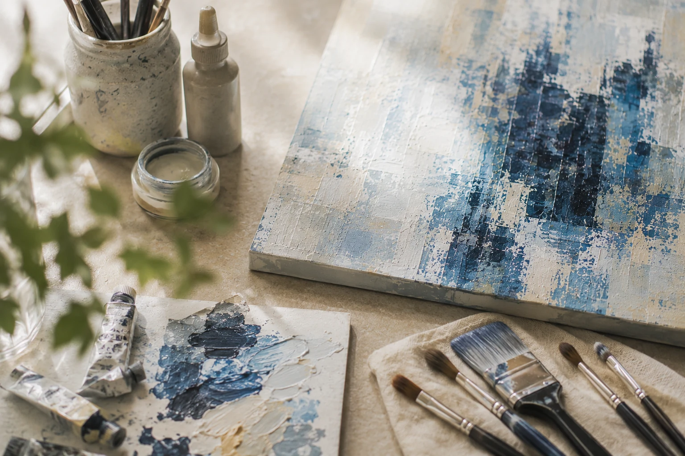
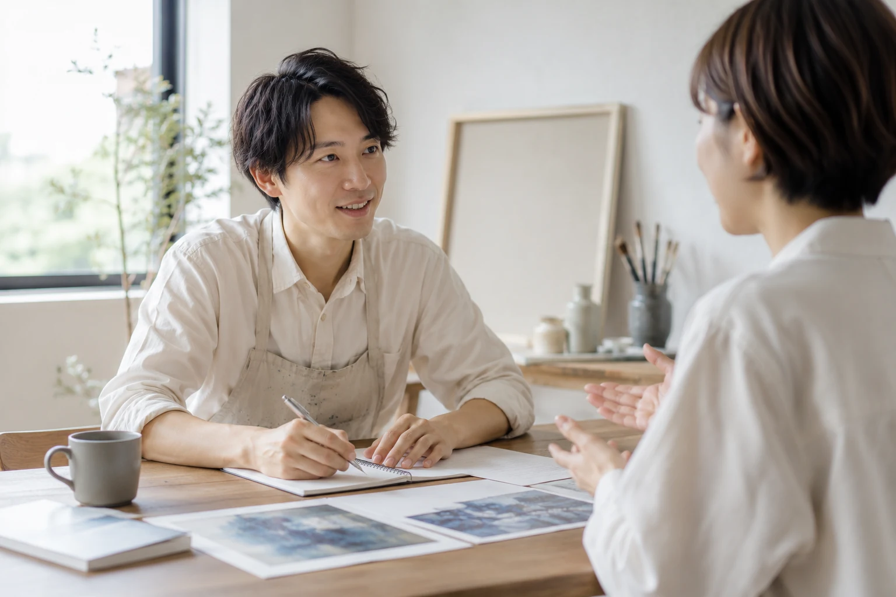
フォームまたはメールで、ご希望の雰囲気やサイズ、設置場所の写真などをお送りください。
オンラインまたはアトリエで直接、イメージをすり合わせながらラフ案をご提案します。
ヒアリングをもとに、アトリエにて一点ずつ丁寧に制作します（制作期間目安：3〜6週間）。
完成後は写真でご確認いただいてから発送、またはご希望に応じて直接搬入・設置いたします。
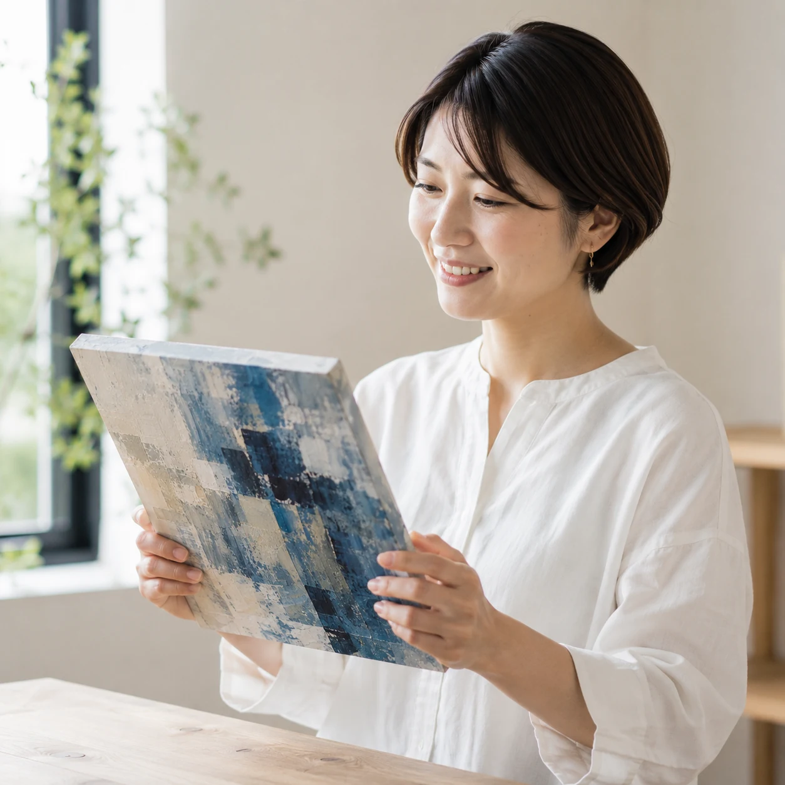
リビングに飾ったところ、来客のたびに話題になります。色味の相談にも丁寧に応じていただけました。
40代・会社員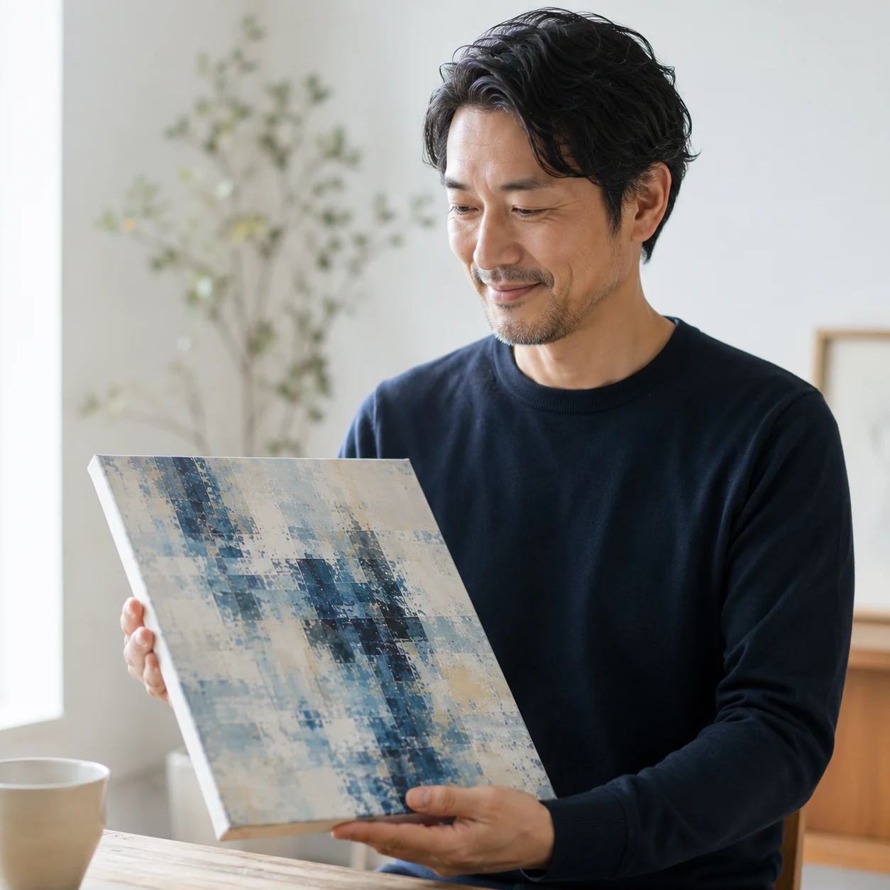
内装のトーンに合わせた色味を提案していただき、お店の世界観がぐっと引き締まりました。
30代・カフェオーナー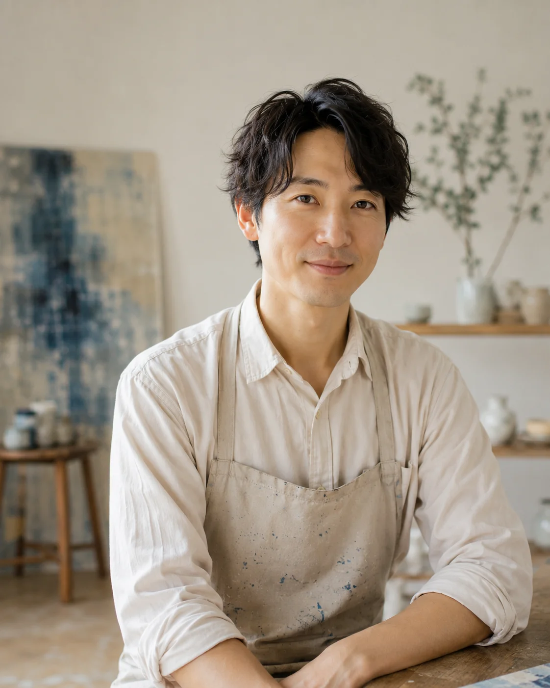
美術大学卒業後、広告制作会社でデザイナーとして勤務。素材の質感や色の重なりに惹かれ独立し、藍染めや古い建物が纏う時間の記憶をテーマにした抽象画を制作しています。個展・グループ展多数、個人邸から商業施設まで幅広く手がけてきました。
問い合わせる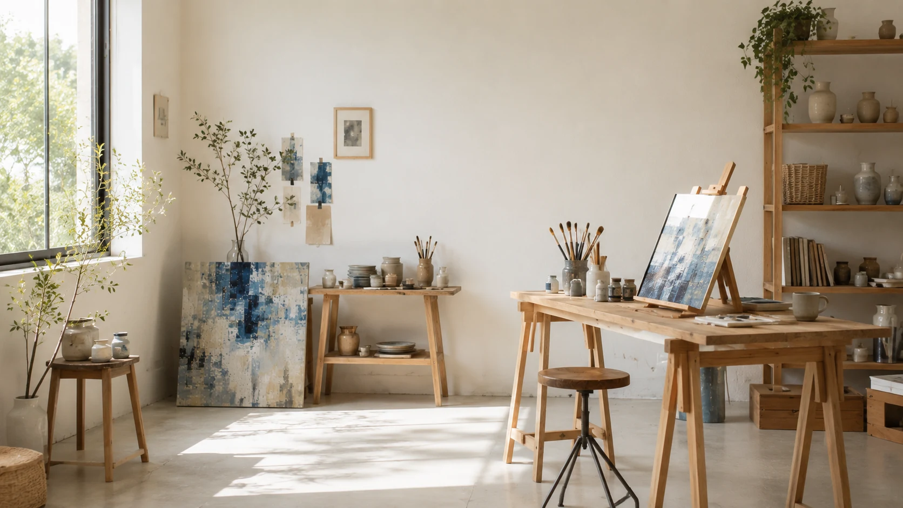